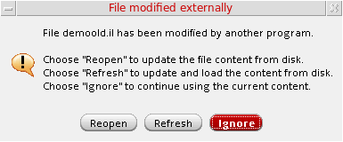
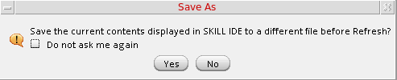
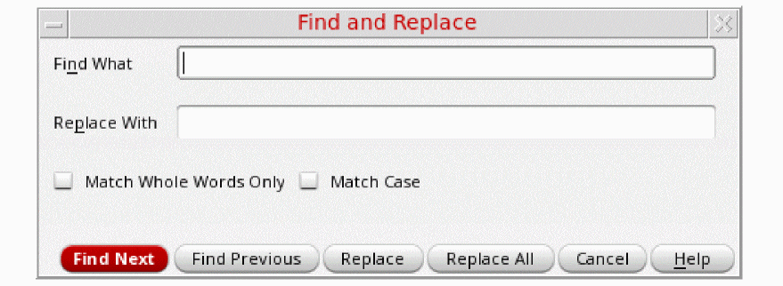

Basic Editing Features
SKILL IDE lets you edit and debug SKILL code in a graphical user interface (GUI). When you open a SKILL file or create a new one, the SKILL IDE editor gets invoked.
Creating New Files
-
To create a new file, do one of the following:
A file with a default name (Document_n) opens in the current directory. -
To save this file, click
on the File toolbar or choose File – Save As. The Save As dialog box displays.
The first time you display the Save As dialog box by either selecting File – Open or File – Save As, the current working directory displays as the default working directory. On subsequent calls, the last used directory is used as the default working directory. -
Specify a name for the file in the File name field and select an appropriate file format from the Files of type drop-down list.
-
Click Save.
 on the File toolbar
on the File toolbarOpening Existing Files for Reading/Editing
-
To open an existing file for editing, do one of the following:
- Choose File – Open
- Click a file name from the list of recently opened files in the File menu.
- Click on the File toolbar
To open an existing file for viewing only, choose File – Open for Read.
The Choose a File dialog box displays, listing all the available files. -
Browse to select the file you want to read or edit and click Open. The selected file opens in the editor.
If you open the file in read-only mode, the title bar of the SKILL IDE window displaysSKILL IDE Reading: <name_of_the_opened_file>. If you open the file in edit mode, the title bar displaysSKILL IDE Editing: <name_of_the_opened_file>.If you attempt to open an already open file that has unsaved changes, a warning message appears. You are then prompted to reload the file from the disk.If the file currently open in the SKILL IDE editor has been edited using some other editor, a warning message appears. You are then prompted to either reopen the updated file without loading, reload the original file from the disk, or ignore the changes made using the other editor.
If you choose to reopen the updated file without loading or reload the original file from the disk, you are prompted to save the current contents of the file to a different file before the reopen or refresh operation.
If you do not wish to be prompted again, select the Do not ask me again option in this dialog box.
Switching Between Read-Only and Edit Modes
To switch from edit mode to read-only mode, choose File – Make Read Only.
When you edit a file in edit mode, the
icon becomes enabled, indicating the need to save the file.
To switch back to edit mode, choose File – Make Editable.
When you edit a file in read-only mode, the
icon becomes enabled, indicating the need to save the file.
Discarding Edits
- Choose File – Discard Edits. A warning message that prompts you to confirm the action appears.
- Click Yes to confirm. Once discarded, the edits can not be restored.
Finding and Replacing Text
To find a text string in your file:
-
Choose Edit – Find (
Ctrl+F). The Find and Replace dialog box displays.
 - In the Find What field, type the search string and then, set the following options:
- Click Find Next (Ctrl+Shift+F) or Find Previous (Ctrl+Shift+B) to find the next or previous occurrence of the search string in the file.
You can also access the search functionality from the Search toolbar, as described below:
In the Search toolbar, choose Search from the first drop-down list box. In the second drop-down list box, type the search string or click the drop-down arrow to choose a previously used search string and then, press Enter. After the search string is found, you can click the Find Previous  and Find Next
and Find Next  icons to find the previous or next occurrence of the search string.
icons to find the previous or next occurrence of the search string.
To replace a text string in your file:
- Choose Edit – Find (Ctrl+F). The Find and Replace dialog box displays.
- In the Find What field, type the search string.
- In the Replace With field, type the text string you want to replace the search string with.
- Set the following options:
-
Click Find Next (
Ctrl+Shift+F) to find the search string. If the search string is found, it is highlighted in the source code pane. - Click Replace to replace the search string with the new string or Replace All to replace all occurrences of the search string with the new string.
Printing Files
SKILL IDE provides the basic print features to help you print your SKILL files. To print a file:
- Click on the File toolbar or choose File – Print. The Print Dialog box displays.
- Click Options to specify the print options for the current print job. You can specify the printer name, print range, output settings, and the color mode for the print job.
- Click Print to send the file to the selected printer for printing.
Closing Files
If you have opened multiple files in the editor, to close each file separately do one of the following:
To close all files simultaneously, choose File – Close All.
When you click Close All, if any of the open files has unsaved changes, the Save Changes dialog box displays. This dialog box prompts you to save the open files before exiting the editor. Select the check box adjacent to the files you want to save and click OK.
In addition, you get the Save Changes dialog box when trying to close the Virtuoso CIW directly without exiting the SKILL IDE editor. If you click Cancel, the exit from Virtuoso CIW too gets aborted.
Exiting the Editor
If your open files have unsaved changes, you are prompted to save each file individually before exiting the editor.
Related Topics
Return to top